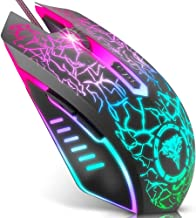
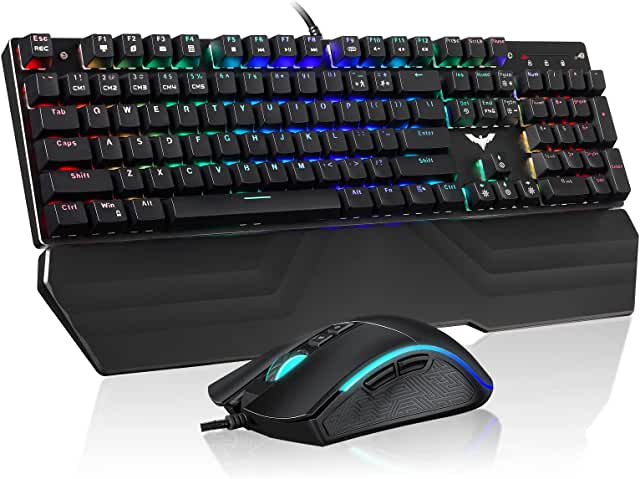
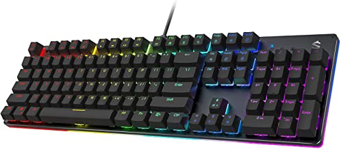
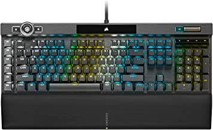
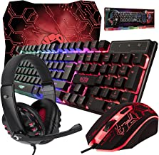
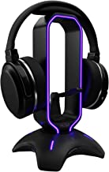
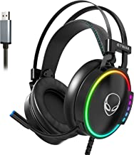

Razer DeathAdder v2 Mini mouse para juegos: sensor óptico de 8500 K DPI - Diseño ligero de 2.19 oz - Iluminación Chroma RGB - 6 botones programables - Cinta de agarre antideslizante incluida, negro clásico

BENGOO Ratón para juegos con cable, ratones ópticos USB con retroiluminación RGB, 4 DPI ajustables hasta 3600, mouse ergonómico para computadora portátil gamer con 6 botones programables para Windows 7/8/10/XP Vista Linux, color negro

havit Combo de teclado mecánico y mouse RGB para juegos de 104 teclas, interruptores azules, teclados USB con cable con reposamuñecas desmontable, mouse programable para PC Gamer Computadora de escritorio (negro)

Black Shark Teclado mecánico RGB para juegos con retroiluminación LED con interruptores azules, totalmente programable, antifantasma, 104 teclas para PC de escritorio, Sixgill K2

Corsair Teclado óptico y mecánico para juegos K100 RGB, interruptores ópticos y mecánicos Corsair OPX RGB, tecnología de hiperprocesamiento AXON para un rendimiento 4 veces más rápido, borde ligero RGB de 44 zonas

Teclado y mouse para juegos, alfombrilla de mouse y auriculares para juegos, paquete de retroiluminación LED RGB con cable para jugadores de PC y usuarios de Xbox y PS4, edición 4 en 1 Hornet RX-250

Tilted Nation Soporte para auriculares RGB y soporte para auriculares para juegos para pantalla de escritorio con soporte de cable elástico para mouse, soporte para auriculares para juegos con Hub USB 3.0 para Xbox, PS4, PC, accesorio perfecto para juegos

ETWAR Auriculares USB para juegos para PC, 7.1 con micrófono con cancelación de ruido, con luces RGB para portátiles con micrófono